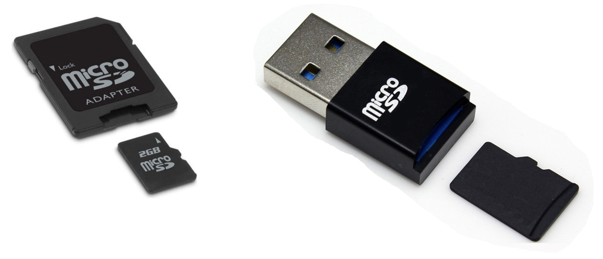
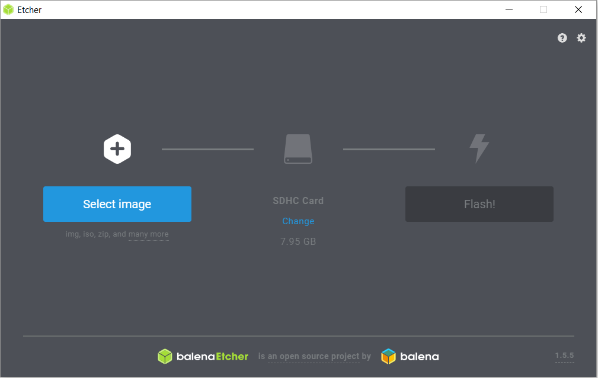
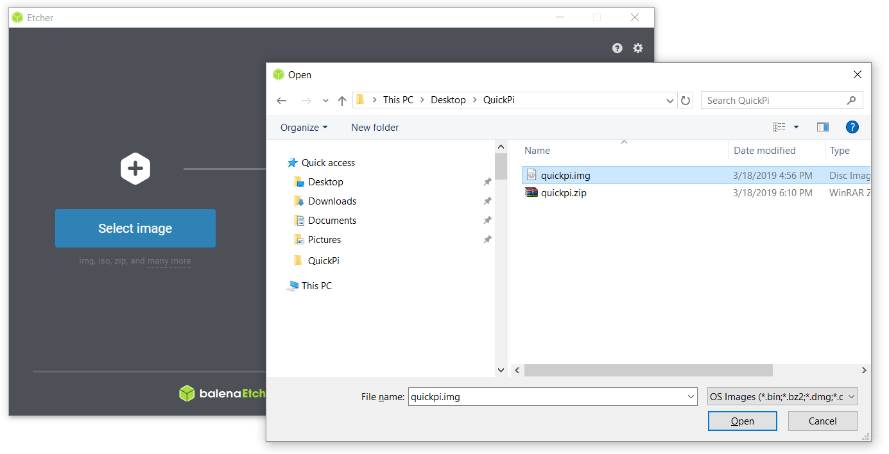
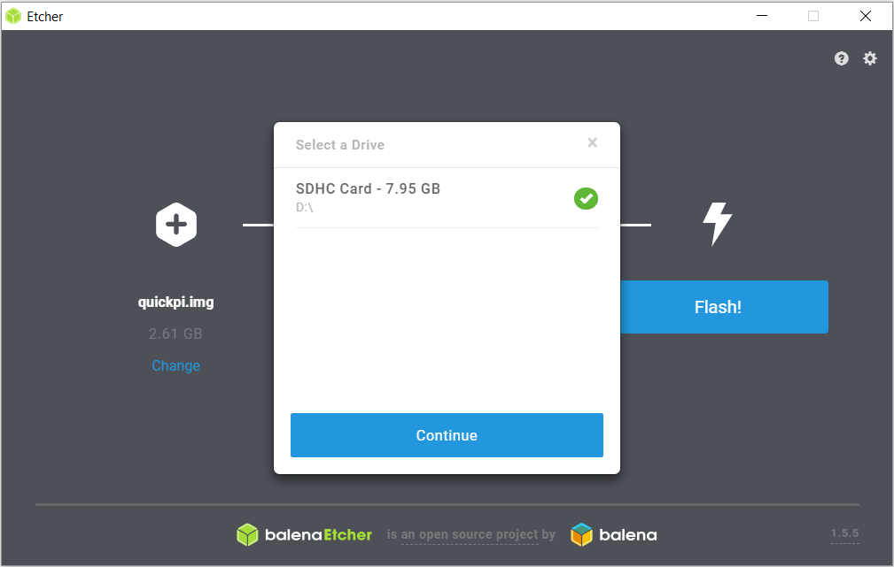
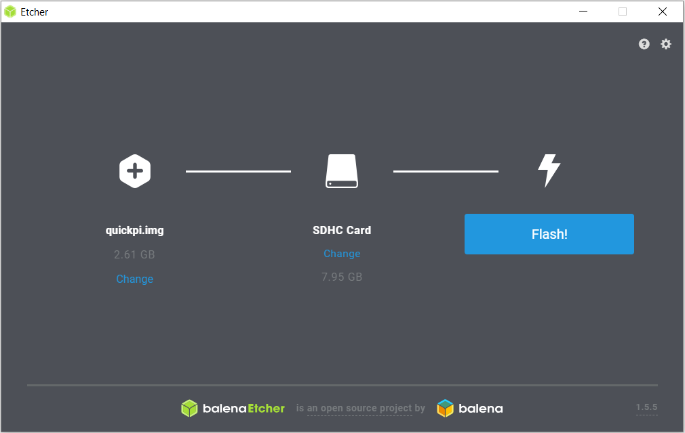
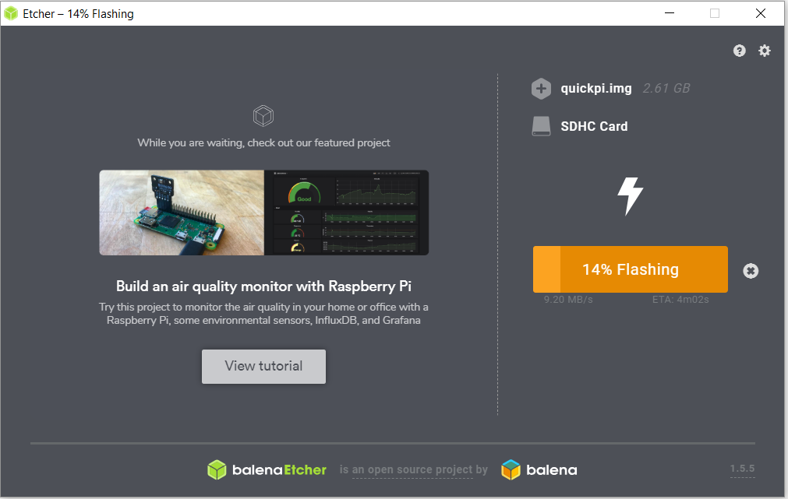
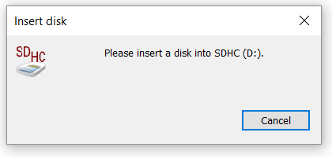
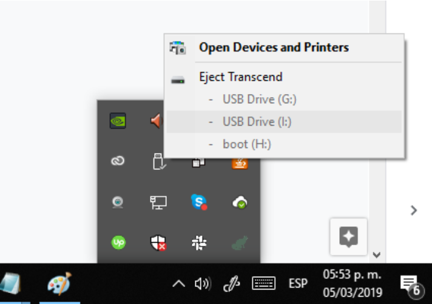

Insérez la carte SD dans un lecteur de cartes SD et connectez celui-ci à un ordinateur.

Téléchargez l'image du système d'exploitation adapté à QuickPi, puis décompressez la pour obtenir un fichier quickpi.img.
Téléchargez le logiciel balena Etcher et installez-le.
Cliquez sur select image et sélectionnez le fichier quickpi.img que vous avez précédemment téléchargé.
Sélectionnez le lecteur dans lequel se trouve la carte et cliquez sur Flash!
 Cette opération prend habituellement moins de 10 minutes.
Si des popups vous demandant d'insérer un disque s'affichent, ignorez les.
Enfin, fermez le fichier et éjectez la carte SD de manière sécurisée.
